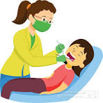

To take care of your dental health, make sure to brush your teeth twice a day, floss daily, and visit your dentist regularly for check-ups and cleanings. It's also important to eat a balanced diet and limit sugary foods and drinksTo take care of your dental health, make sure to brush your teeth twice a day, floss daily, and visit your dentist regularly for check-ups and cleanings. It's also important to eat a balanced diet and limit sugary foods and drinks..To take care of your dental health, make sure to brush your teeth twice a day, floss daily, and visit your dentist regularly for check-ups and cleanings. It's also important to eat a balanced diet and limit sugary foods and drinks./